การใช้งานโมดูล MCP4725 DAC (Digital-to-Analog Converter)#
บทความนี้กล่าวถึง ตัวอย่างการใช้งานโมดูล MCP4725 DAC ในเบื้องต้น โดยใช้งานร่วมกับบอร์ดไมโครคอนโทรลเลอร์และเขียนโปรแกรมด้วย Arduino Sketch เพื่อสร้างสัญญาณแอนะล็อก จำนวน 1 ช่องสัญญาณ
Keywords: MCP4725, Digital-to-Analog Converter (DAC), I2C Bus, Arduino Sketch, Analog Output, Analog Signal Waveform Generation
- Microchip MCP4725
- ตัวอย่างโค้ด: การตรวจสอบอุปกรณ์ที่เชื่อมต่อกับไมโครคอนโทรลเลอร์ด้วยบัส I2C
- ตัวอย่างโค้ด: การใช้งาน Arduino Library สำหรับ MCP4725
- ตัวอย่างโค้ด: การสร้างสัญญาณเอาต์พุตจาก DAC และอ่านค่าสัญญาณแอนะล็อกด้วย ADC
- ตัวอย่างโค้ด: การสร้างสัญญาณรูปคลื่นไซน์ (Sine Wave Generation)
▷ Microchip MCP4725#
MCP4725 ของบริษัท Microchip Technology Inc. เป็นไอซีสำหรับการสร้างสัญญาณแอนะล็อกจากข้อมูลดิจิทัล (Digital to Analog Converter: DAC) ด้วยการเขียนโปรแกรมควบคุมผ่านทางบัส I2C
ข้อมูลเชิงเทคนิคที่สำคัญของไอซีมีดังนี้ (อ้างอิงจากเอกสาร Datasheet ของผู้ผลิต)
- แรงดันไฟเลี้ยง (VDD) สำหรับไอซี: 2.7V ~ 5.5V
- ตัวถังของไอซี: SOT-23-6 มี 6 ขา
- ข้อมูลมีความละเอียด (Bit Resolution): 12 บิต
- ช่วงแรงดันเอาต์พุต: 0V ถึง VDD (Rail-to-Rail Output)
- เชื่อมต่อด้วยบัส I2C สำหรับการเขียนโปรแกรมควบคุม
- ความเร็ว I2C
- Standard-speed mode: 100kHz
- Fast-speed mode: 400kHz
- High-speed mode: 3.4Mbps (max.)
- มีขา A0 (Address Pin) สำหรับกำหนดค่าบิตของอุปกรณ์
- มีหมายเลขอุปกรณ์เลือกได้คือ:
0x60(A0=0) หรือ0x61(A0=1)
- มีหมายเลขอุปกรณ์เลือกได้คือ:
- ระยะเวลาเอาต์พุตเข้าสู่ระดับคงตัว (Output Settling Time): 6us (typ.) ซึ่งเป็นระยะเวลาที่ต้องใช้ในการอัปเดตเอาต์พุตหลังจากมีการเขียนค่าใหม่และเอาต์พุตเปลี่ยนไปสู่ระดับแรงดันใหม่
- ความต้านทานของขาเอาต์พุต (Vout to Gnd): 1 Ohm (Normal Mode)
- มีโหมดการประหยัดพลังงาน: Power-down Mode 1,2,3 นอกเหนือจาก Normal Mode
- ในแต่ละโหมดของ Power-down Mode เอาต์พุตจากวงจรออปแอมป์ภายใน จะไม่เชื่อมต่อกับขา Vout และมีการเปิดใช้งานตัวต้านทานแบบ Pulldown ที่ขา Vout ให้เชื่อมต่อกับ GND (ขนาด 1k, 100k หรือ 500k โอห์ม ตามโหมดที่เลือกใช้)
- มีหน่วยความจำภายในแบบ EEPROM ขนาด 14 บิต สำหรับเก็บค่าการตั้งค่าใช้งานและค่าเอาต์พุต
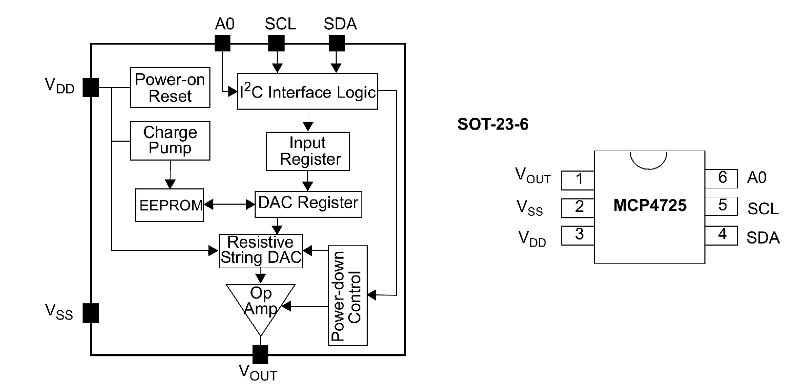
รูป: บล็อกไดอะแกรมของไอซี MCP4725
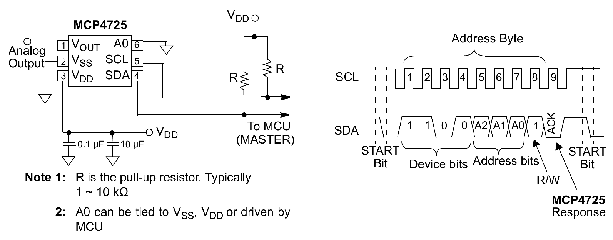
รูป: การเชื่อมต่อด้วยบัส I2C
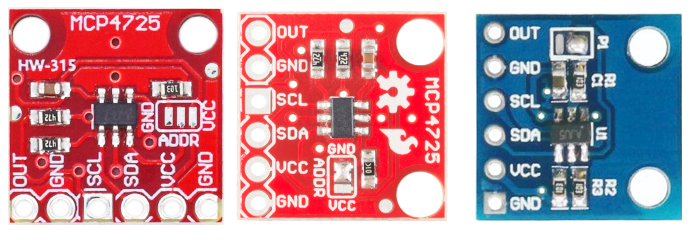
รูป: ตัวอย่างโมดูล MCP4725 ซึ่งมีการใส่ตัวต้านทาน Pull-up สำหรับ SCL และ SDA มาให้แล้ว
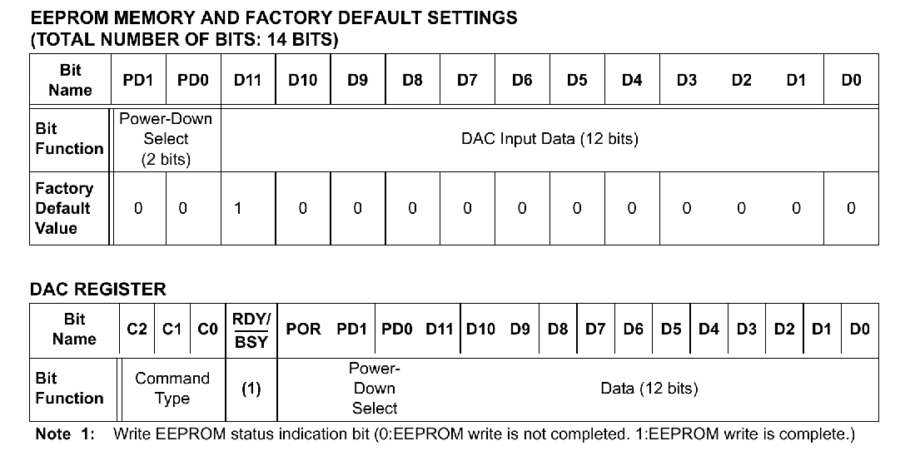
รูป: รีจิสเตอร์ของ MCP4725
ภายใน DAC Register ซึ่งมีขนาด 16 บิต ประกอบด้วย
C[2:0]3 บิต สำหรับเลือกชนิดของคำสั่ง (Command Type)RDY/BSY1 บิต (Ready/Not Busy) เป็น Status Bit สำหรับการเขียนข้อมูลลงใน EEPROMPOR1 บิตPD[1:0]2 บิต สำหรับเลือกโหมดการทำงาน (Normal Mode และ Power-down Modes)D[11:0]12 บิต สำหรับเขียนข้อมูลอินพุต
ถ้ากำหนดให้ Dn คือ ข้อมูลดิจิทัลขนาด 12 บิต (DAC Input Code) ซึ่งมีค่าอยู่ระหว่าง 0..4095 ข้อมูลจะถูกแปลงให้เป็นแรงดันเอาต์พุตโดยใช้ไอซี MCP4275 ได้ดังนี้
โดยทั่วไปแล้ว การอัปเดตค่าสำหรับเอาต์พุต ก็จะใช้คำสั่ง Fast-Mode Write
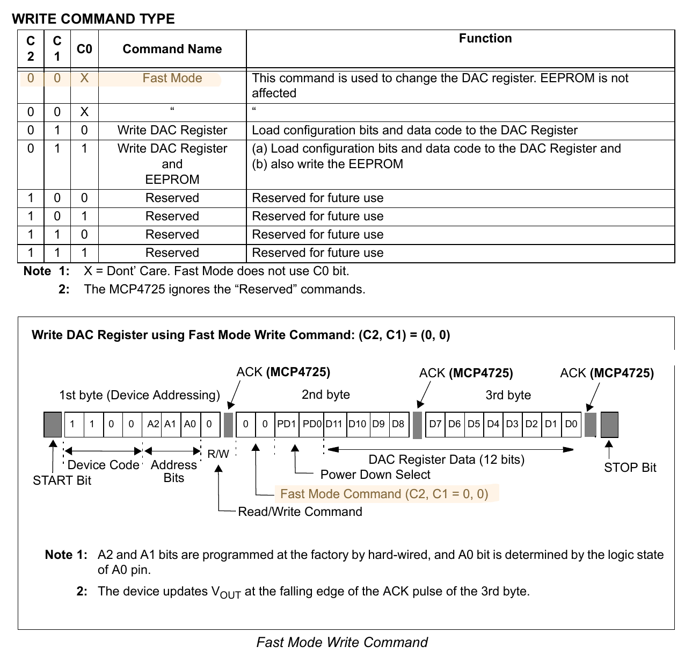
รูป: คำสั่งสำหรับ MCP4725 และการใช้คำสั่งแบบ Fast-Mode Write ซึ่งจะมีการเขียนข้อมูล 3 ไบต์ ต่อการอัปเดตเอาต์พุตหนึ่งครั้ง (Single Input Code Update)
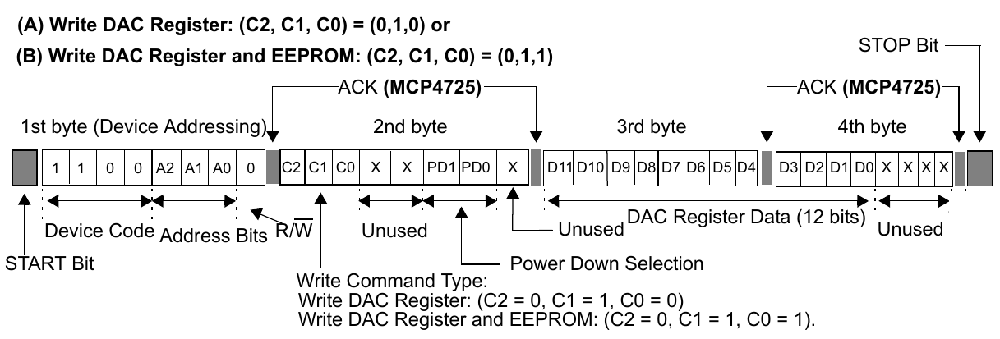
รูป: การเขียนข้อมูลไปยังรีจิสเตอร์ภายใน หากไม่ได้ใช้ Fast-Mode Write (จะต้องมีการเขียนข้อมูล 4 ไบต์ ต่อการอัปเดตเอาต์พุตหนึ่งครั้ง)
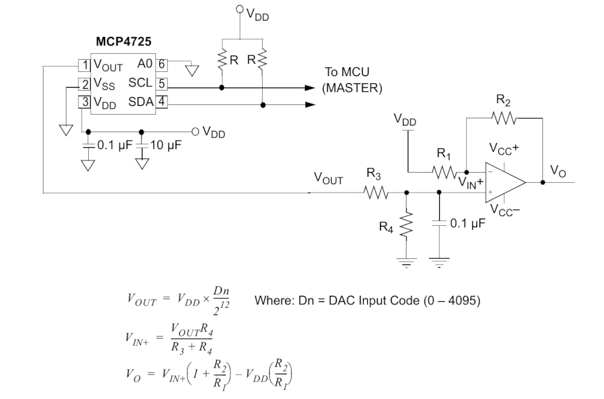
รูป: ตัวอย่างการต่อวงจร MCP4725 ร่วมกับวงจรไอซี OpAmp เพื่อสร้างแรงดันเอาต์พุตที่อยู่ในช่วงแรงดันไฟฟ้าเป็นบวกและลบได้ (โดยใช้แรงดันไฟเลี้ยง VCC+ และ VCC- สำหรับออปแอมป์)
พารามิเตอร์ของวงจร DAC ซึ่งบ่งบอกความละเอียดและความแม่นยำในการทำงานของ DAC เช่น
- LSB (Least Significant Bit): ความละเอียดของเอาต์พุต มีหน่วยวัดเป็นโวลต์หรือมิลลิโวลต์ (Ideal voltage difference between two successive input codes) ถ้ามีการเพิ่มหรือลดค่าของข้อมูลครั้งละหนึ่ง จะทำให้มีการเปลี่ยนแปลงแรงดันเอาต์พุตกี่โวลต์ ซึ่งคำนวณได้ดังนี้ เช่น VDD=5V และ n=12 จะได้ LSB = 5V / 4096 = 1.22 mV
- INL (Integral Nonlinearity): ความแตกต่างระหว่างแรงดันเอาต์พุตที่วัดได้จริงกับแรงดันเอาต์พุตที่ควรจะเป็น เป็นกี่เท่าของแรงดัน LSB
- DNL (Differential Nonlinearity): ความแตกต่างของแรงดันเอาต์พุตของสองระดับถัดกันที่วัดได้จริง ลบด้วยแรงดัน LSB เป็นกี่เท่าของแรงดัน LSB
ในการใช้งานขาเอาต์พุตของ MCP4725 DAC มีข้อควรระวังเช่น
การเลือกค่าความต้านทานมาเป็นโหลด หากมีความต้านทานต่ำ จะส่งผลต่อระดับแรงดันเอาต์พุต
เช่น ถ้าตั้งค่าเอาต์พุตไว้สูงสุด (ค่าตัวเลขเท่ากับ 4095 หรือ FFFh)
ควรจะได้แรงดันเอาต์พุตใกล้เคียง VDD
แต่ถ้าใช้ความต้านทานต่ำมาเป็นโหลด (Load Resistance)
แรงดันเอาต์พุตที่วัดได้จริง น้อยกว่าค่าที่ควรจะเป็น
และค่าความต้านทานของโหลดที่ขาเอาต์พุต ก็ส่งผลต่อปริมาณกระแสที่ไหลเช่นกัน
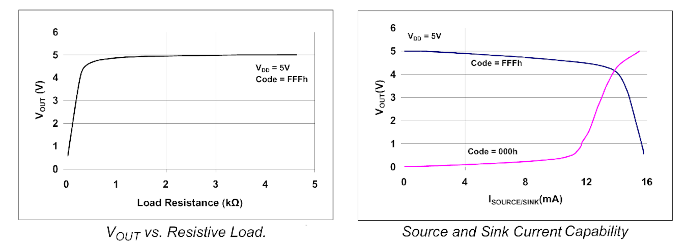
รูป: การเลือกใช้ค่าความต้านทานเป็นโหลดที่ขาเอาต์พุต เมื่อใช้ VDD=5V
▷ ตัวอย่างโค้ด: การตรวจสอบอุปกรณ์ที่เชื่อมต่อกับไมโครคอนโทรลเลอร์ด้วยบัส I2C#
โค้ดตัวอย่างต่อไปนี้สาธิตการตรวจสอบเพื่อดูว่ามีอุปกรณ์ I2C Slave เชื่อมต่อกับบอร์ดไมโครคอนโทรลเลอร์ ESP32-C3 (ใช้บอร์ด Super-Mini ESP32-C3) และแสดงหมายเลขอุปกรณ์ที่ตรวจพบ
ในตัวอย่างนี้ได้เลือกใช้ขา GPIO-6 และ GPIO-7 สำหรับสัญญาณ SDA และ SCL ของบัส I2C ตามลำดับ
#include <Wire.h>
#define I2C_SDA_PIN (6)
#define I2C_SCL_PIN (7)
#define I2C_SPEED_MAX (1000000)
void setup() {
Serial.begin( 115200 );
while (!Serial) { delay(10); }
// set I2C pins for ESP32-C3 Mini board
Wire.begin( I2C_SDA_PIN, I2C_SCL_PIN );
Wire.setClock( I2C_SPEED_MAX ); // ~750kHz
}
void i2c_scan() {
int n_devices = 0;
Serial.println( "Scanning I2C bus..." );
Serial.print( " " );
for ( uint8_t col=0; col < 16; col++ ) {
Serial.printf( "%3x", col );
}
Serial.println( "" );
uint8_t addr=0;
for( uint8_t row=0; row < 8; row++ ) {
Serial.printf( "%02x:", row << 4 );
for ( uint8_t col=0; col < 16; col++ ) {
if ( row == 0 && addr<=1 ) {
Serial.print(" ");
} else {
Wire.beginTransmission( addr );
if ( Wire.endTransmission()>0 ) {
Serial.printf( " --" );
} else {
Serial.printf( " %2x", addr );
n_devices++;
}
}
addr++;
}
Serial.println( "" );
}
Serial.println( "---------------------\n" );
Serial.flush();
}
void loop() {
i2c_scan();
delay(5000);
}
ในโค้ดตัวอย่างได้มีการตั้งค่า I2C Frequency ไว้สูงสุด 1MHz แต่ผลจากการวัดสัญญาณจริง การทำงานของ ESP32-C3 จะสร้างสัญญาณ SCL ได้ความถี่สูงสุด ประมาณ 750kHz ซึ่งได้ความถี่สูงกว่า Fast Mode (400kHz) โดยทั่วไป
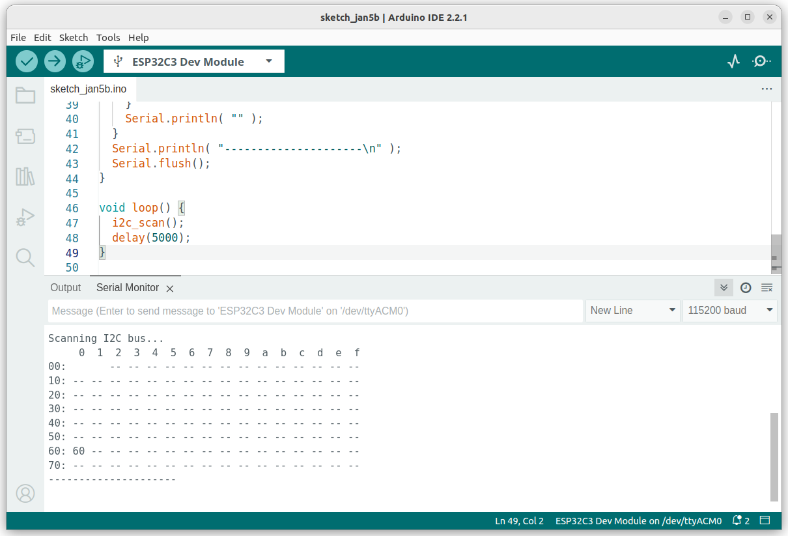
รูป: สัญญาณ SCL และ SDA เมื่อวัดด้วยออสซิลโลสโคปดิจิทัล
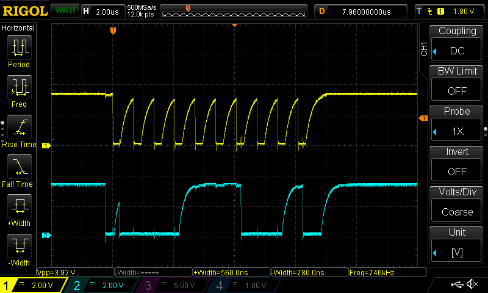
รูป: ตัวอย่างข้อความเอาต์พุตที่แสดงให้เห็นว่าตรวจพบอุปกรณ์ที่มีหมายเลข 0x60
ซึ่งก็คือ โมดูล MCP4725 ที่ได้นำมาต่อใช้งานกับบอร์ดไมโครคอนโทรลเลอร์
▷ ตัวอย่างโค้ด: การใช้งาน Arduino Library สำหรับ MCP4725#
ถ้าต้องการใช้ Arduino Library สำหรับการใช้งาน MCP4725
ก็มีไลบรารี เช่น
RobTillaart/MCP4725/
ตัวอย่างโค้ดสำหรับการสาธิตการใช้งานไลบรารีในเบื้องต้น มีดังนี้
#include "MCP4725.h"
#define I2C_SDA_PIN (6) // GPIO-6
#define I2C_SCL_PIN (7) // GPIO-7
MCP4725 MCP(0x60); // Create an instance of the MCP4725 class.
void setup() {
Serial.begin(115200);
delay(200);
Serial.println("ESP32C3 - MCP4725 Demo....");
Serial.printf( "MCP4725 Library v%s\n", MCP4725_VERSION );
Wire.begin( I2C_SDA_PIN, I2C_SCL_PIN ); // Set the SDA/SCL pins
Wire.setClock( 400000 ); // Set the I2C speed
}
void loop() {
static uint16_t value = 0;
static uint32_t ts_saved = 0;
uint32_t ts_now = micros();
if ( ts_now - ts_saved >= 1000 ) {
// Update the output very 1 msec.
ts_saved = ts_now;
value = (value+1) % 256;
MCP.writeDAC( 16*value );
}
}
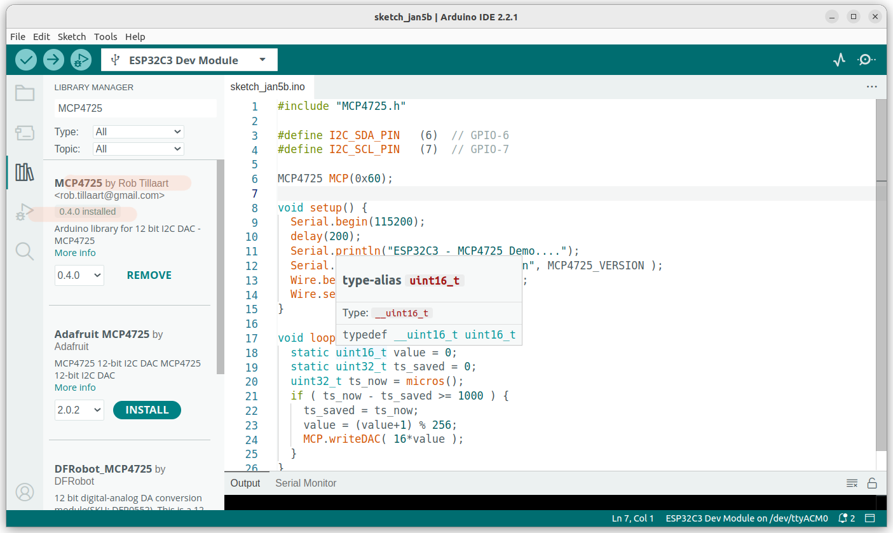
รูป: ตัวอย่างการติดตั้งไลบรารีสำหรับ Arduino IDE และทดลองโค้ดตัวอย่าง
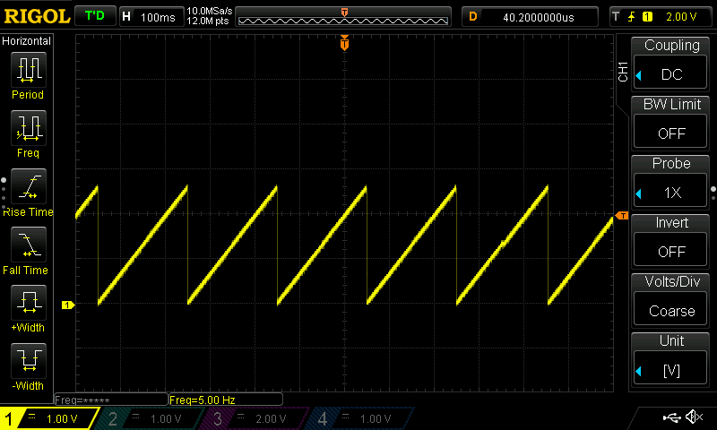
รูป: สัญญาณเอาต์พุตที่ได้จากการทำงานของโค้ดตัวอย่าง
▷ ตัวอย่างโค้ด: การสร้างสัญญาณเอาต์พุตจาก DAC และอ่านค่าสัญญาณแอนะล็อกด้วย ADC#
โค้ดตัวอย่างถัดไปสาธิตการสร้างและใช้งานฟังก์ชัน writeRegisterMode(...)
และ writeFastMode(...) ที่สามารถใช้แทนกันได้สำหรับการส่งข้อมูลเพื่ออัปเดตเอาต์พุตของ
MCP4725
ในการอัปเดตข้อมูลแต่ละครั้ง จะมีการอ่านค่าแรงดันเอาต์พุตจากโมดูล DAC โดยใช้วงจร ADC ภายในชิป ESP32-C3 (เลือกใช้ขา GPIO-2) สำหรับสัญญาณแอนะล็อกอินพุต ซึ่งมีแรงดันไฟฟ้าอยู่ในช่วง 0V แต่ไม่เกิน 3V
#include <Wire.h>
#define AIN_PIN (2) // GPIO-2
#define I2C_SDA_PIN (6) // GPIO-6
#define I2C_SCL_PIN (7) // GPIO-7
#define I2C_ADDR (0x60) // Default 7-bit address of MCP4725
void setup() {
Serial.begin(115200);
delay(200);
Serial.println("\n\nESP32C3 + MCP4725");
Wire.begin( I2C_SDA_PIN, I2C_SCL_PIN, 400000 /*freq.*/ );
pinMode( AIN_PIN, ANALOG );
analogSetPinAttenuation( AIN_PIN, ADC_11db );
analogReadResolution( 12 );
}
void writeRegisterMode(uint8_t cmd_byte, uint16_t value) {
Wire.beginTransmission(I2C_ADDR);
Wire.write(cmd_byte);
Wire.write((value >> 4) & 0xff);
Wire.write((value & 0x0f) << 4);
Wire.endTransmission();
}
void writeFastMode(uint16_t value) {
Wire.beginTransmission(I2C_ADDR);
Wire.write((value >> 8) & 0x0f); // high byte (no powerdown)
Wire.write(value & 0xff); // low byte
Wire.endTransmission();
}
uint16_t scale = 60;
uint16_t cnt = 0;
const uint16_t CNT_MAX = 100;
void loop() {
uint16_t value = (cnt < CNT_MAX/2) ? cnt : CNT_MAX-cnt;
// C[2:0]= "010", PD[1:0]="00"
writeRegisterMode( 0b01000000, value*scale );
// writeFastMode( value*scale );
cnt = (cnt+1) % CNT_MAX;
Serial.println( String("MAX:4096,MIN:0,AIN:") + analogRead(AIN_PIN) );
delay(20);
}
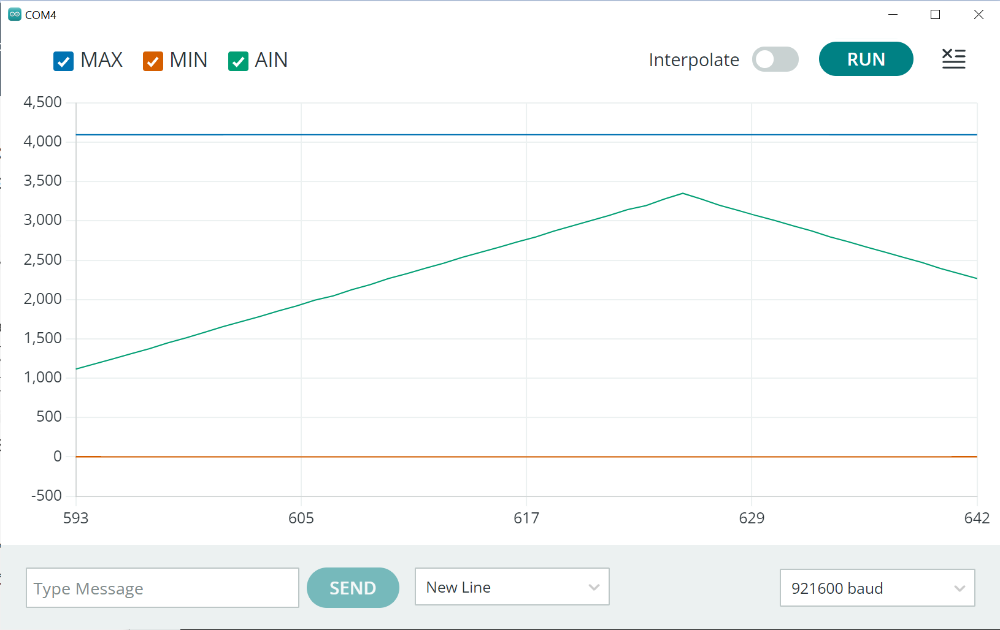
รูป: ตัวอย่างการรับค่าและแสดงผลด้วย Arduino Serial Plotter
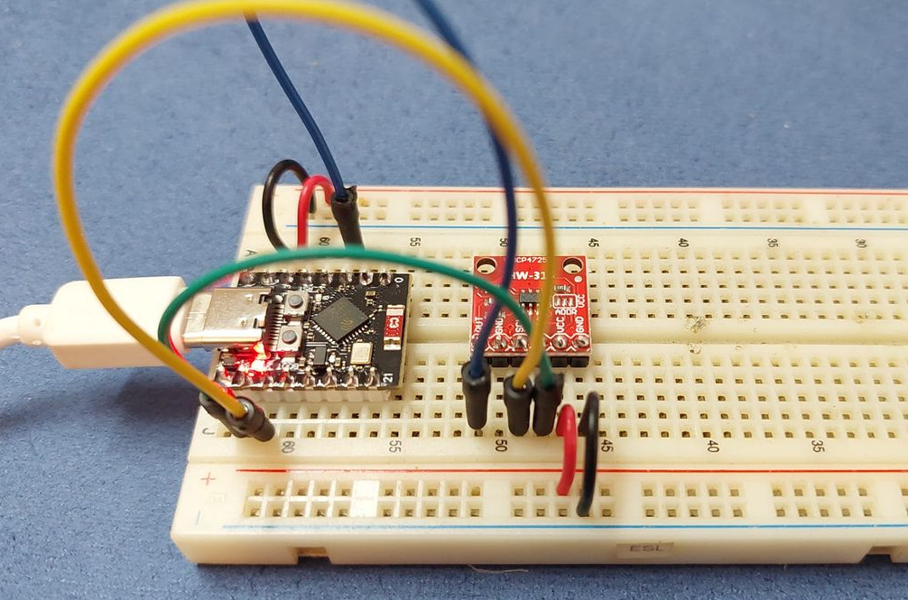
รูป: ตัวอย่างการต่อวงจรทดลองบนเบรดบอร์ด
▷ ตัวอย่างโค้ด: การสร้างสัญญาณรูปคลื่นไซน์ (Sine Wave Generation)#
ตัวอย่างโค้ดถัดไปสาธิตการสร้างสัญญาณรูปคลื่นไซน์ โดยใช้ข้อมูลในอาร์เรย์ที่มีการคำนวณจากฟังก์ชันไซน์ โดยมีจำนวนข้อมูลเท่ากับ N=20 ซึ่งได้จากการชักตัวอย่างจากฟังก์ชันไซน์จำนวน 1 คาบ
ในตัวอย่างนี้การอ่านค่าจากอาร์เรย์ตามลำดับแล้วนำไปใช้เป็นเอาต์พุตสำหรับ MCP4725 ด้วยอัตราคงที่ จะอาศัยการทำงานของวงจร Hardware Timer ของ ESP32-C3 โดยตั้งค่าให้เกิดอินเทอร์รัพท์ของวงจรตัวนับที่มีความละเอียดในการนับเท่ากับ 1 ไมโครวินาที และกำหนดให้การเกิดอินเทอร์รัพท์ หรือ Alarm Period มีช่วงเวลาเท่ากับ 1000 ไมโครวินาที และเกิดขึ้นซ้ำด้วยอัตราคงที่
นอกจากนั้นแล้ว ในตัวอย่างนี้ได้สาธิตการสร้าง FreeRTOS Task
เพื่อใช้ในการอัปเดตค่าเอาต์พุตของ MCP4275 โดยเรียกใช้ฟังก์ชัน writeFastMode(...)
เมื่อเกิดอินเทอร์รัพท์จากไทม์เมอร์ ฟังก์ชัน onTimer() ซึ่งทำหน้าที่เป็น
ISR (Interrupt Service Routine)
หรือ Callback Function จะทำงาน และแจ้งผ่านการจัดการของ FreeRTOS
ไปยังทาสก์ดังกล่าวให้อัปเดตค่าถัดไปสำหรับเอาต์พุต
ในตัวอย่างนี้มีการกำหนดสถานะเอาต์พุตที่ขา GPIO-8 (LED_PIN)
เมื่อเกิดอินเทอร์รัพท์และฟังก์ชัน ISR ทำงานในแต่ละครั้ง ขาเอาต์พุตนี้จะถูกเปลี่ยนเป็น HIGH
เมื่อทาสก์ที่กำลังรออยู่เพื่ออัปเดตค่าเอาต์พุตในครั้งถัดไป ได้ทำงานอีกครั้ง จะเปลี่ยนให้ขาเอาต์พุตนี้เป็น LOW
ดังนั้นความกว้างของพัลส์ที่เกิดขึ้นกับขาเอาต์พุตดังกล่าว เป็นตัวระบุว่า จะต้องใช้เวลาเท่าไหร่
จึงทำให้ทาสก์ที่รออยู่ได้กลับมาทำงานอีกครั้งหลังจากเหตุการณ์อินเทอร์รัพท์
#include <Wire.h>
#define LED_PIN (8) // GPIO-8
#define I2C_SDA_PIN (6) // GPIO-6
#define I2C_SCL_PIN (7) // GPIO-7
#define I2C_ADDR (0x60) // Default 7-bit address of the MCP4725 module
#define I2C_SPEED_MAX (1000000)
#define TIMER_FREQ (1000000) // Frequency of the hardware timer in Hz
#define ALARM_PERIOD (1000) // (1usec resolution)
const uint32_t DAC_MAC_VALUE = ((1<<12)-1);
const uint32_t N = 20;
uint16_t SINE_TABLE[ N ] = {0};
hw_timer_t *timer = NULL; // Hardware Timer
TaskHandle_t updateDACTask = NULL; // Task handle
void IRAM_ATTR onTimer() {
BaseType_t xHigherPriorityTaskWoken = pdFALSE;
digitalWrite(LED_PIN, HIGH);
vTaskNotifyGiveFromISR(updateDACTask, &xHigherPriorityTaskWoken);
portYIELD_FROM_ISR(xHigherPriorityTaskWoken);
}
void setup() {
pinMode(LED_PIN, OUTPUT);
Serial.begin(115200);
delay(200);
Serial.println("\n\nESP32C3 + MCP4725");
Wire.begin(I2C_SDA_PIN, I2C_SCL_PIN, 400000 /*freq.*/);
Wire.setClock(I2C_SPEED_MAX); // Set I2C speed higher
// Compute the sine wave table of N entries (for a single period)
for (int i = 0; i < N; i++) {
SINE_TABLE[i] = DAC_MAC_VALUE * (sin(i*2*PI/N) + 1)/2;
}
xTaskCreate(updateDAC, "DAC Update Task", 2048, NULL, 2, &updateDACTask);
timer = timerBegin( TIMER_FREQ ); // 1MHz
if (timer == NULL) {
Serial.println("Timer init failed!!");
}
timerStop(timer);
timerAttachInterrupt(timer, &onTimer);
timerAlarm(timer, ALARM_PERIOD /*period (ticks)*/,
true /*autoreload*/, 0 /*autoreload count*/);
timerStart(timer);
Serial.printf("Timer frequency: %lu MHz\n",
timerGetFrequency(timer) / 1000000);
}
void writeFastMode(uint16_t value) {
Wire.beginTransmission(I2C_ADDR);
Wire.write((value >> 8) & 0x0f); // high byte (no powerdown)
Wire.write(value & 0xff); // low byte
Wire.endTransmission();
}
void updateDAC(void *parameter) {
static uint8_t index = 0;
for (;;) {
ulTaskNotifyTake(pdTRUE, portMAX_DELAY);
digitalWrite(LED_PIN, LOW);
uint16_t value = SINE_TABLE[index];
writeFastMode(value);
index = (index + 1) % N;
}
}
void loop() {
}
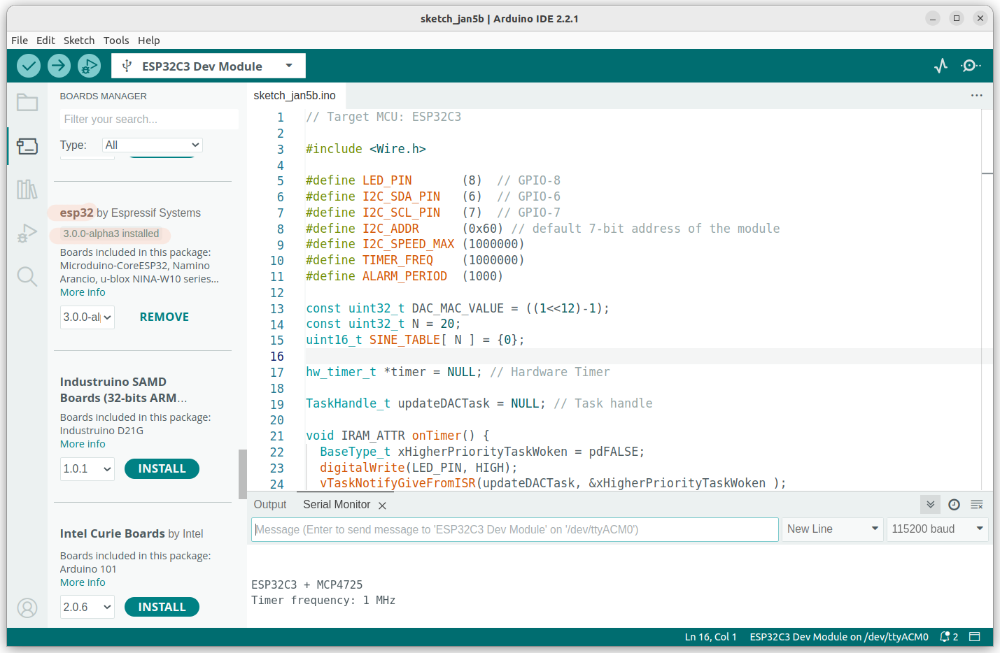
รูป: การคอมไพล์โค้ด Arduino Sketch โดยใช้งาน Arduino ESP32 Core
หากนำโค้ดตัวอย่างไปทดลองใช้กับอุปกรณ์จริง และลองวัดสัญญาณจากบอร์ดไมโครคอนโทรลเลอร์ ด้วยออสซิลโลสโคป ก็มีตัวอย่างรูปคลื่นสัญญาณดังนี้
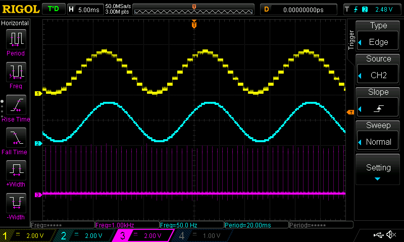
รูป: รูป: ตัวอย่างการวัดสัญญาณ CH1: Output, CH2: Output (filtered), CH3: LED
จากรูปคลื่นสัญญาณ จะเห็นได้ว่า สัญญาณช่องแรก (CH1) เป็นสัญญาณจากขาเอาต์พุตของ MCP4275 และช่องที่สอง (CH2) เป็นสัญญาณเอาต์พุตที่ผ่านวงจรสัญญาณความถี่ต่ำ โดยใช้ Low-Pass Filter (R=10k, C=0.1uF) ซึ่งจะทำให้สัญญาณดูต่อเนื่องมากขึ้น และวัดความถี่ของสัญญาณเอาต์พุตได้ 50Hz ซึ่งคำนวณได้จากอัตราการอัปเดตเอาต์พุต 1kHz (ดูได้จากสัญญาณ CH3: LED) และหนึ่งคาบมีจำนวนข้อมูลเท่ากับ N=20 ดังนั้น จึงได้ความถี่ 1kHz/20 = 50Hz
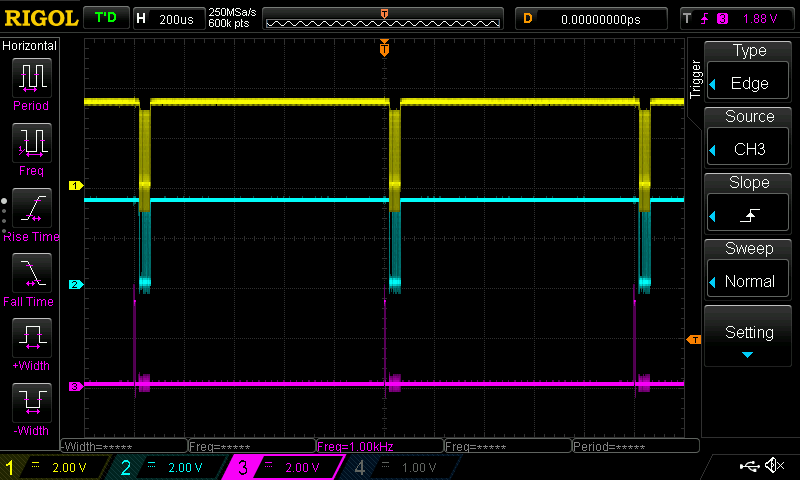
รูป: ตัวอย่างการวัดสัญญาณ CH1: SCL, CH2: SDA, CH3: LED
ถ้ามีการปรับอัตราการเกิด Alarm หรือ ลดคาบเวลาของการอัปเดตเอาต์พุต ก็จะได้ความถี่ของสัญญาณเอาต์พุตสูงขึ้น เช่น จากเดิม 1kHz ก็ลองเปลี่ยนเป็น 10kHz (ดูได้จากสัญญาณ CH3: LED)
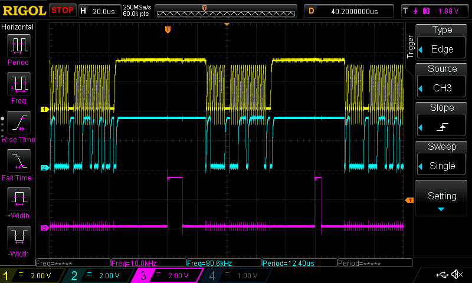
รูป: ตัวอย่างการวัดสัญญาณ CH1: SCL, CH2: SDA, CH3: LED
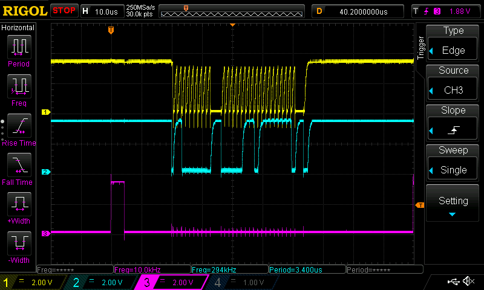
รูป: ตัวอย่างการวัดสัญญาณ CH1: SCL, CH2: SDA, CH3: LED (ขยายเวลา)
จากรูปคลื่นสัญญาณจะเห็นช่วงเวลาที่ฟังก์ชัน writeFastMode(...) ทำงาน
โดยเขียนข้อมูลไปยังไอซี MCP4275 ผ่านบัส I2C และมีการเขียนข้อมูลจำนวน 3 ไบต์ ต่อครั้ง
▷ กล่าวสรุป#
บทความนี้นำเสนอตัวอย่างการเขียนโค้ด Arduino เพื่อใช้งานโมดูล MCP4725 I2C DAC เพื่อสร้างสัญญาณแอนะล็อกเป็นเอาต์พุตหนึ่งช่องสัญญาณ และมีตัวอย่างการวัดสัญญาณจริงด้วยออสซิลโลสโคป
This work is licensed under a Creative Commons Attribution-ShareAlike 4.0 International License.
Created: 2024-01-06 | Last Updated: 2024-01-06